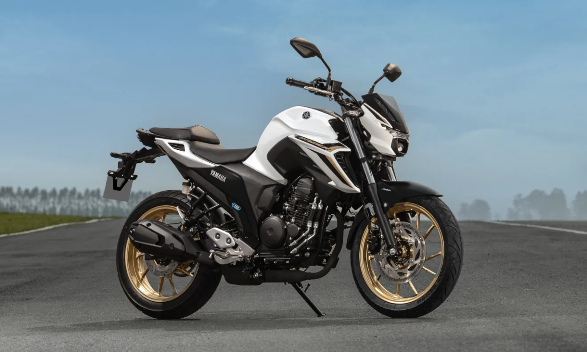

A R15 ABS foi eleita a Melhor Moto do Brasil na categoria City, na premiação
concedida em 2024 pela Revista Motociclismo. Esse reconhecimento é fruto da confiança e do voto de consumidores apaixonados, que inspiram a YAMAHA a superar desafios continuamente.

Fazer FZ25 Connected
O motor de 250 cilindradas da FAZER FZ25 CONNECTED é reconhecido em todo
o Brasil por seu desempenho, eficiência e confiabilidade. Com potência e torque ideais, é perfeito para uso urbano e em viagens, além de exigir uma manutenção simples.
Crosser S ABS
A Crosser S é a escolha perfeita para quem procura um motor flex de 150cc que entrega resistência para o dia a dia, seja no asfalto ou na terra. O motor durável e econômico,
conta com a tecnologia Blueflex, para escolher entre gasolina, etanol ou ambos, o que for melhor para você.
NMAX ABS Connected
A NMAX ABS Connected redefine sua experiência de pilotagem. Com controle de
tração e freios a disco com sistema ABS nas duas rodas, ela oferece controle superior em pisos de baixa aderência, reduzindo a chance de perda de estabilidade.
Perguntas Frequentes
Simule um financiamento. +
“Este simulador apresenta apenas valores de referência,
não valendo como proposta. Os valores poderão variar conforme critérios, taxas de juros, tarifas e regras vigentes no momento da contratação”.
Valores de frete por região.
+
"Valores sujeitos a alteração."
Simule um consórcio.
+
"1ª parcela só para 90 dias em até 48x. 3 anos de garantia!"
Seguros Yamaha.
+
"Compartilhamos essa paixão e queremos garantir que você possa desfrutar
cada momento sobre a sua moto sabendo que ela estará segura e protegida."
Yamaha serviços.
+
"Oferece todo o cuidado necessário para a sua motocicleta, através de mecânicos
certificados pela Academia Técnica Yamaha - YTA, das peças genuínas e do melhor lubrificante de motor, o YAMALUBE."
“Mais que uma moto, uma paixão que acelera o coração.”